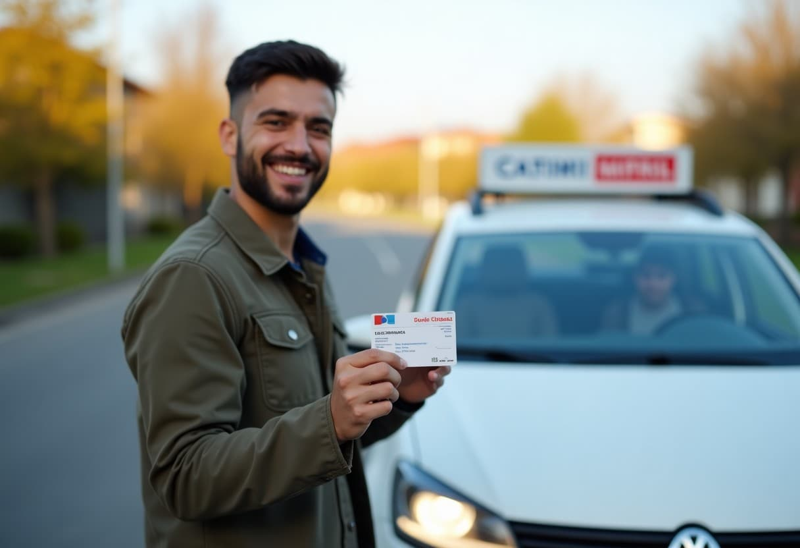

Kayıt, ders saati, deneme sınavı ve ödeme takibi tek uygulamada.
Teorik sınıfa kalan süre. Yerinizi şimdiden ayırtın.
Google'da 312 yorum (temsilî)
“Direksiyon hocamız çok sabırlıydı, ilk sınavda geçtim. Akşam saatlerine ders verilmesi işime çok yaradı.” Elif K. · Seyhan
“Deneme sınavları birebir aynı çıktı. Kayıttan sınava kadar her şeyi WhatsApp'tan takip ettim.” Mert A. · Yüreğir
Teorik eğitim ve sınavlar genellikle 4–6 hafta sürer. Direksiyon derslerini akşam ve hafta sonu saatlerine de alabilirsiniz.
B, A2 ve M sınıfı için 18, C sınıfı için 21, A sınıfı için 24 yaşını doldurmuş olmak gerekir (A2'si 2 yıllık olanlar 20 yaşında A'ya geçebilir).
MEB e-sınav merkezinde bilgisayarda 50 soru çözülür; 70 puan alan başarılı sayılır. Kursumuzda sınırsız deneme sınavı çözersiniz.
Evet. Kredi kartına taksit ya da kurs içi taksit seçenekleri var; kesin tutarlar kayıtta yazılı olarak verilir.
Evet. Teorik derslere bir şubede, direksiyon derslerine size yakın olan şubede devam edebilirsiniz.
Otomatik vitesli araçla sınava girenlerin belgesine kısıt kodu işlenir; manuel araç için ayrıca fark sınavı gerekir. Kayıtta size uygun seçeneği birlikte belirleriz.
10 soru · trafik, ilk yardım, motor.
Sınıf, mevcut ehliyet ve ödeme şekli.
Örnek hesaplamadır. Harçlar, sağlık raporu ve sınav ücretleri ayrıdır; kesin tutar kayıtta yazılı verilir.
Bu hesapla Dijitabela ile görüş (demo)Size yakın şubeyi seçin.
1 dakika. Mesaj WhatsApp'ta hazır açılır.